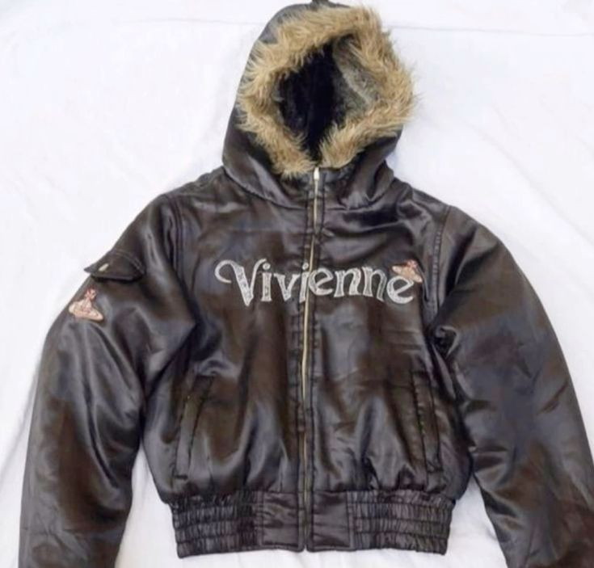
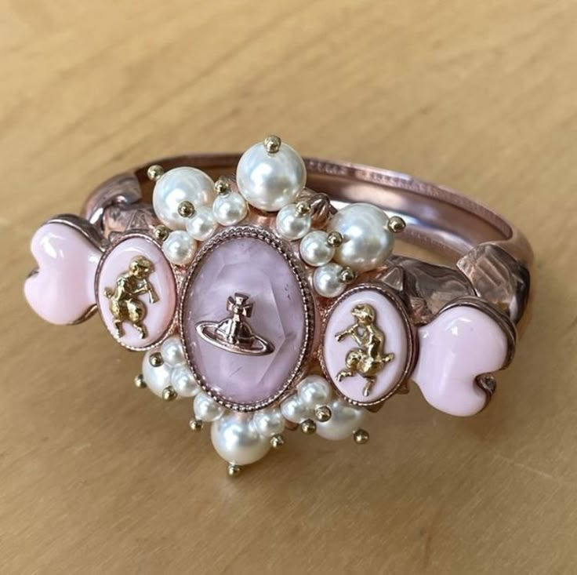
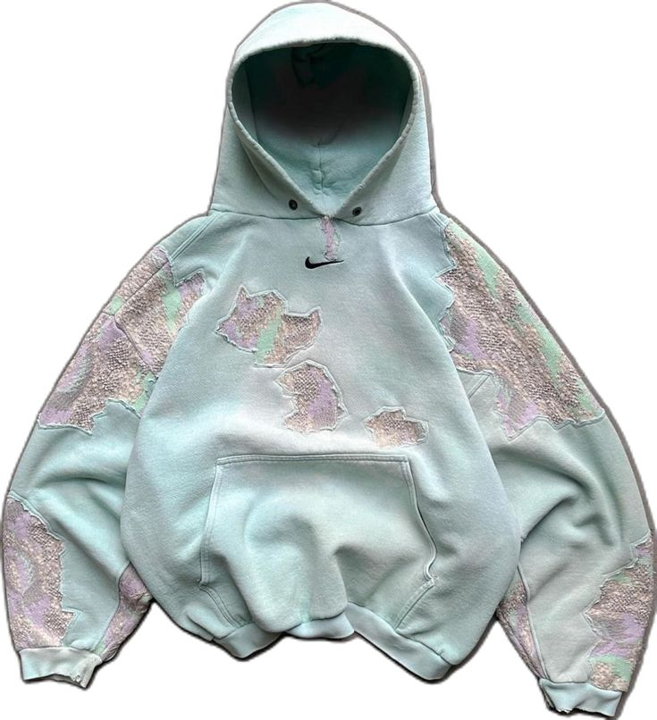
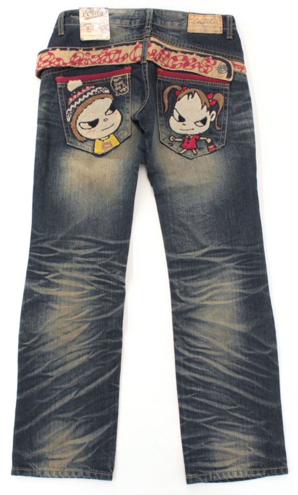
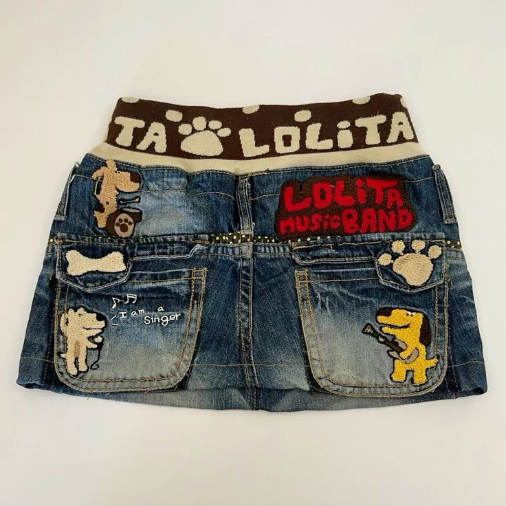

ONLINE CLOSET.
The taste of online technologies in the eyes of fashion.

Our
ONLINE DRAWER
POPULARS
One of the most popular, most liked, and most used closet finds, last updated 26 June 2024
.jpg)
Crazy! But not surprising.Here are the most top used AND top rated fits combo that you would want to use, because why not! This is the most TRSUTED, I repeat, trusted website winky face muach.
.jpg)
Top ItemsThis Year
FRUITS Graphic Tees
Fruit graphic tees are trendy and vibrant t-shirts that feature various fruit illustrations or prints, adding a playful and fresh touch to your wardrobe. These tees often showcase colorful and eye-catching designs of fruits like strawberries, lemons, pineapples, and watermelons, making them perfect for casual outings or summer activities. Whether paired with jeans, shorts, or skirts, these tees are a great way to embrace a fruity, lighthearted aesthetic while staying cool and comfortable.
.jpg)
Favorite COMBOs
This look blends vintage, streetwear, and Y2K vibes. A navy Adidas hoodie over a graphic tee pairs with straight-leg jeans for a relaxed feel. A pink Kangol beanie and Louis Vuitton bag add bold color, while gold accessories, a square-faced watch, and clear glasses elevate the style. Gray and pink Adidas sneakers complete the ensemble, with hair bows and a claw clip as chic details.
Recommended Pieces
-

Vivienne Westwood Bomber Jacket
A glossy black bomber jacket with fur-trimmed hood, featuring the classic "Vivienne" branding and iconic orb logos. -

Vivienne Westwood Gold & Pink Pearl Bracelet
A stunning Vivienne Westwood bracelet featuring a gold-tone chain adorned with lustrous pearls and subtle pink accents, blending timeless elegance with the brand’s signature edgy aesthetic.
-

Nike Distressed Hoodie
A mint-green Nike hoodie with a worn, deconstructed design featuring frayed and distressed patchwork details in pastel tones. -

Pucca x C.I Jeans
A pair of vintage dark-wash jeans featuring embroidered Pucca and Garu characters on the back pockets, paired with a stylish graphic belt. The design exudes a playful and nostalgic Y2K aesthetic.
-
 'I HEART LA' Lucky Key Charm Necklace
A silver-toned charm necklace featuring a camouflage-patterned key with pink "549" text, a number 4 charm, an "8-ball" charm, and a "Lucky" ring charm. The combination of elements gives it a playful and edgy aesthetic, mixing streetwear and vintage vibes.
'I HEART LA' Lucky Key Charm Necklace
A silver-toned charm necklace featuring a camouflage-patterned key with pink "549" text, a number 4 charm, an "8-ball" charm, and a "Lucky" ring charm. The combination of elements gives it a playful and edgy aesthetic, mixing streetwear and vintage vibes. -

Lolita Music Band Denim Skirt
A denim mini skirt with an elastic waistband, decorated with embroidered dog-themed graphics and patches. -
 Aelfric Eden Faux Leather Jacket
A vintage-style faux leather bomber jacket with a slightly worn look, featuring multiple pockets and elastic cuffs. The rustic brown color gives it a rugged yet stylish appeal, perfect for streetwear enthusiasts.
Aelfric Eden Faux Leather Jacket
A vintage-style faux leather bomber jacket with a slightly worn look, featuring multiple pockets and elastic cuffs. The rustic brown color gives it a rugged yet stylish appeal, perfect for streetwear enthusiasts.